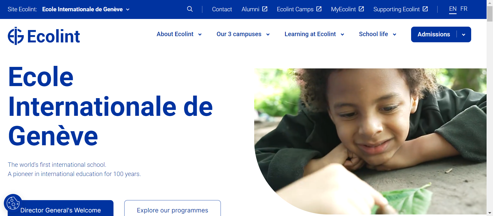

TOP 10 SKILLS TO LEARN IF YOU WANNA SURVIVE!!!!
1) Practical application of skills : The ability to apply theoretical knowledge in real-world situations is crucial.
This involves problem-solving, adaptability, and a practical understanding of how to use skills in a dynamic environment.
2) Computer or digital tools skills : Of course, roficiency in using digital tools and technology is foundational in the
4IR. This includes knowledge of programming languages, familiarity with software and applications, and the ability to navigate
and leverage digital platforms effectively.
3) Critical thinking skills : Critical thinking involves analyzing information, evaluating situations, and making
informed decisions. In the 4IR, where data is abundant, individuals need to be adept at critical thinking to extract meaningful
insights and solve complex problems.
4) Innovation/Creativity skills : The rapid pace of technological advancements demands a creative mindset. Individuals
should be able to think innovatively, propose novel solutions, and contribute to the development of new ideas and products.
5) Collaboration skills : Given the interconnected nature of the digital landscape, collaboration is essential. The
ability to work in diverse teams, communicate effectively, and share ideas is vital for successful outcomes in the 4IR.
6) Communication skills : Clear and effective communication is crucial, especially in a globalized world. This includes
not only written and verbal communication but also the ability to convey complex technical concepts to non-experts.
7) Research skills : While we have abundant information online, effective research skills involve the ability to discern
credible sources, synthesize information, and stay updated on rapidly evolving technologies. The skill of efficiently
navigating through vast amounts of data is crucial.
P.S. This website was written with help of chapgpt lol.
8) International competitiveness skills : With global connectivity, individuals must be globally aware and adaptable.
This includes understanding international markets, cultures, and being able to compete and collaborate on an international
scale.
9) Problem solving skills : In the 4IR, where complexity and uncertainty are inherent, the ability to identify, analyze,
and solve problems is paramount. This involves a combination of critical thinking, creativity, and practical application of
knowledge to address challenges and navigate unforeseen issues.
These are the skills that the International schools like Campus des Nations
are teaching to the students.
TIme for some ad :
üåé Unlocking Future Success at Campus des Nations International School üåé
üöÄ Embrace the Future with Cutting-Edge Education! üöÄ
At Campus des Nations, we're not just educating students; we're shaping future leaders for the Fourth
Industrial Revolution. üåç‚ú®
üåü Key Skills for Tomorrow's World: Our curriculum is designed to instill critical thinking, creativity,
collaboration, and communication skills – the essential foundations for success in the fast-paced, ever-evolving landscape of the
21st century.
üí° Innovation Hub: Our state-of-the-art facilities and Innovation Hub empower students to explore and create. From coding to
robotics, we foster a passion for technology and innovation that prepares students for the challenges and opportunities of the
future.
üåé Global Perspective: With a diverse community and a curriculum that embraces global perspectives, Campus des Nations prepares
students to navigate an interconnected world. Language fluency, cultural understanding, and global citizenship are at the core of
our educational approach.
üîó Connecting Theory to Reality: Beyond textbooks, our students engage in real-world applications. Internships, projects with
industry leaders, and partnerships with innovative companies bridge the gap between theory and practice, ensuring our graduates
are ready for the challenges of the Fourth Industrial Revolution.
üåà Holistic Development: We believe in nurturing well-rounded individuals. Our holistic approach includes sports, arts, and
extracurricular activities, fostering resilience, adaptability, and a love for lifelong learning.
ü§ù Join the Campus des Nations Community: Be part of an educational journey that goes beyond traditional boundaries. Together,
let's prepare students not just for a career but for a future where they can lead, innovate, and thrive.
üîó Explore more at Campus des Nations and embark on a transformative educational adventure! Click the image below!
